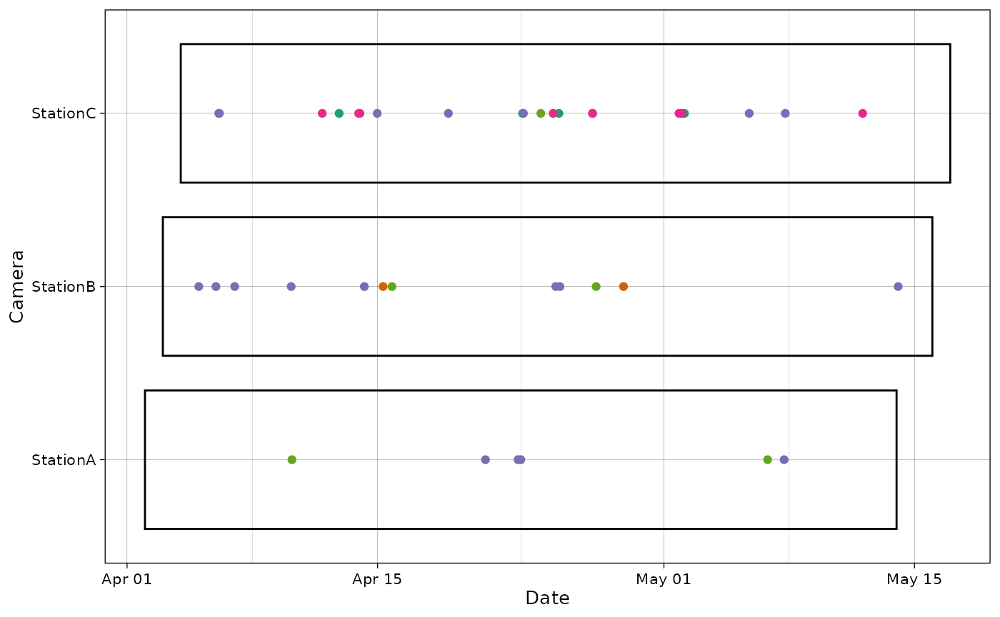

This vignette demonstrates how this package can be used to plot camera trap data.
Import and prepare data
recordTableSample$DateTimeOriginal <- as.POSIXct(recordTableSample$DateTimeOriginal)
recordTableSample$Date <- as.Date(recordTableSample$Date)
recordTableSample$Time <- chron::times(recordTableSample$Time)
camtraps$Setup_date <- as.Date(camtraps$Setup_date, format = "%d/%m/%Y")
camtraps$Retrieval_date <- as.Date(camtraps$Retrieval_date, format = "%d/%m/%Y")Plot observations
The package provides a function to plot the observations for each camera.
plot_points(recordTableSample,
cam_col = "Station",
datetime_col = "DateTimeOriginal")
In case a camera was in the data but no observations were made, you can provide a vector of cameras that should show up on the graph:
all_cam <- c("StationA", "StationB", "StationC", "StationD")
plot_points(recordTableSample,
cam_col = "Station",
datetime_col = "DateTimeOriginal",
cam_vec = all_cam)
date_col and time_col can also be used
instead of datetime_col.
plot_points(recordTableSample,
cam_col = "Station",
date_col = "Date",
time_col = "Time")
It is also possible to provide a column for points colors:
plot_points(recordTableSample,
cam_col = "Station",
points_col = "Species",
datetime_col = "DateTimeOriginal")
By providing additional info, it is also possible to visualize the sampling period on the same graph.
plot_points(recordTableSample,
cam_col = "Station",
points_col = "Species",
datetime_col = "DateTimeOriginal",
dfcam = camtraps,
setup_dfcam = "Setup_date",
retrieval_dfcam = "Retrieval_date")
Various options are available to customize this graph:
spp <- unique(recordTableSample$Species)
pal <- RColorBrewer::brewer.pal(length(spp), "Purples")
plot_points(recordTableSample,
cam_col = "Station",
points_col = "Species",
datetime_col = "DateTimeOriginal",
dfcam = camtraps,
setup_dfcam = "Setup_date",
retrieval_dfcam = "Retrieval_date",
fill_rect = "darkgoldenrod1",
alpha_rect = 0.6,
col_rect = NA,
height_rect = 0.5,
ptsize = 3,
date_breaks = "1 month",
date_limits = as.POSIXct(c("2009-02-01",
"2009-06-01"),
tz = "UTC"),
date_format = "%a %d %B",
text_x_angle = 45,
cols = pal)
Using ggiraph, the plot can also be made
interactive:
p <- plot_points(recordTableSample,
cam_col = "Station",
points_col = "Species",
datetime_col = "DateTimeOriginal",
dfcam = camtraps,
setup_dfcam = "Setup_date",
retrieval_dfcam = "Retrieval_date",
interactive = TRUE)
ggiraph::girafe(ggobj = p)Plot cameras
The package also provides a function to plot the cameras with Leaflet.
Here, the dataset is already projected using the UTM zone 50 (East Asia)/ Therefore, we provide the EPSG code to use (EPSG:32650).
plot_map(camtraps,
cam_col = "Station",
lat_col = "utm_y", lon_col = "utm_x",
crs = 32650)It is also possible to display cameras names:
plot_map(camtraps,
cam_col = "Station",
lat_col = "utm_y", lon_col = "utm_x",
display_camnames = TRUE,
crs = 32650)Additional information can also be displayed using the radius of the camera points. Here, we choose to make circles sizes proportional to the abundance of one species at each camera:
# Get abundance per camera
PBE_abundance <- recordTableSample |>
filter(Species == "PBE") |>
group_by(Station) |>
summarise(count = n())
radius <- PBE_abundance$count
names(radius) <- PBE_abundance$Station
radius
#> StationA StationB StationC
#> 4 8 6
plot_map(camtraps,
cam_col = "Station",
lat_col = "utm_y", lon_col = "utm_x",
radius = radius,
label = paste("Camera:", names(radius),
"| abundance:", radius),
crs = 32650)If data is missing, it will show up in purple on the map.
Plot species
The package also includes a simple function to plot species counts.
plot_species_bars(recordTableSample,
spp_col = "Species")If there is a count column, it can also be included.
with_count <- recordTableSample |>
mutate(count = 2)
plot_species_bars(with_count,
spp_col = "Species", count_col = "count")
If there is an observation type column, NA values in the
species column will be replaced with the values in observation type.
This is primarily intended for the camtrapDP standard, where non-animal
observations have a NA in the species column.
Here, we add an observation type column to the data and replace some
species with NA.
with_obstype <- recordTableSample |>
mutate(type = ifelse(Species == "PBE", "blank", "animal"),
.after = Species) |>
mutate(Species = ifelse(Species == "PBE", NA, Species))
with_obstype |>
select(Station, Species, type) |>
head()
#> Station Species type
#> 1 StationA <NA> blank
#> 2 StationA <NA> blank
#> 3 StationA <NA> blank
#> 4 StationA <NA> blank
#> 5 StationA VTA animal
#> 6 StationA VTA animal
plot_species_bars(with_obstype,
spp_col = "Species",
obstype_col = "type")Finally, this plot can also be made interactive using
ggiraph:
p <- plot_species_bars(recordTableSample,
spp_col = "Species",
interactive = TRUE)
girafe(ggobj = p)Plot activity
It is also possible to explore the activity times of a given species:
# Get records corresponding only to PBE
PBE_records <- recordTableSample |>
filter(Species == "PBE")
p <- plot_activity(dfrec = PBE_records,
time_dfrec = "Time",
unit = "clock",
interactive = TRUE)
girafe(ggobj = p)Another vignette gives a more in-depth overview of this type of plots (see here).
Plot diversity
It is also possible to plot diversity indices:
# Get diversity
spp_cam <- summarize_species(recordTableSample,
spp_col = "Species",
cam_col = "Station",
by_cam = TRUE)
div <- get_diversity_indices(spp_cam,
spp_col = "Species",
cam_col = "Station")
p <- plot_diversity(div,
div_col = "simpson",
cam_col = "Station",
interactive = TRUE) +
ggtitle("Simpson diversity index")
girafe(ggobj = p)Another vignette gives a more in-depth overview of this type of plots (see here).